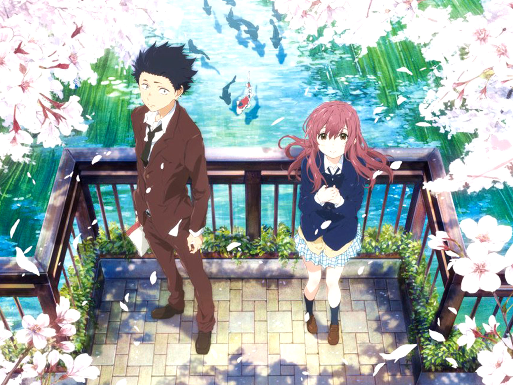
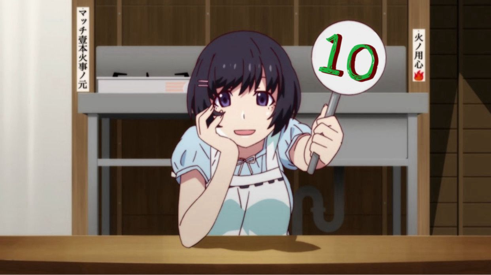

Koe no Katachi (A silent voice) es un manga escrito e ilustrado por Yoshitoki Oima, y serializado en la revista de manga Weekly shonen magazine. Esta historia nos cuenta la vida de Ishida Shoya, un niño de sexto grado que le hace bullying juntos con sus compañeros de clase a Nishimiya Shoko, la cual es una alumna sorda. Las acciones de Ishida pasan de simples bromas de mal gusto hasta que llega el punto donde termina rompiendo varios de los aparatos auditivos de Shoko, haciendo que ella se cambie de escuela. Al buscar al culpable todos señalan a Ishida como el responsable, aislandolo de los demas y volviendose el la nueva victima de acoso escolar. Años despues de un fallido intento de suicidio Ishida se vuelve a encontrar con Shoko, a partir de aqui el intentara redimir sus actos frente a ella.
Como se menciono anteriormente, la historia sigue la busqueda de Ishida por redencion, siendo una obra muy emocional y que nos demuestra lo complicados que somos las personas. A pesar de que Ishida haya sido un acosador anteriormente, conforme pasan los capitulos no puedes evitar sentir empatia por el. En un principio el solo busca reunirse con Shoko para redimir sus actos, pero mientras mas tiempo pasan juntos ella se vuelve alguien importa para el, ayudandolo a ser capaz de volver a vivir, siendo el progreso de la relacion de estos dos personajes algo lindo de leer. A silent voice cuenta con muchos temas relacionados con sus dos protagonistas, pero creo que estos serian los mas relevantes, esta es una historia de dos personas logrando aceptarse a si mismas, y por eso la considero algo que muchos deberian de ver o leer.
A silent voice cuenta con una adaptacion a cine realizada por el estudio Kyoto Animations, esta es de gran calidad y logra capturar muy bien el crecimiento de Ishida como persona, sin embargo yo recomiendo leer el manga ya que la pelicula no logra abarcar por completo la obra. A silent voice es un manga lleno de emociones, y personalmente uno de mis favoritos, de calificacion final:
